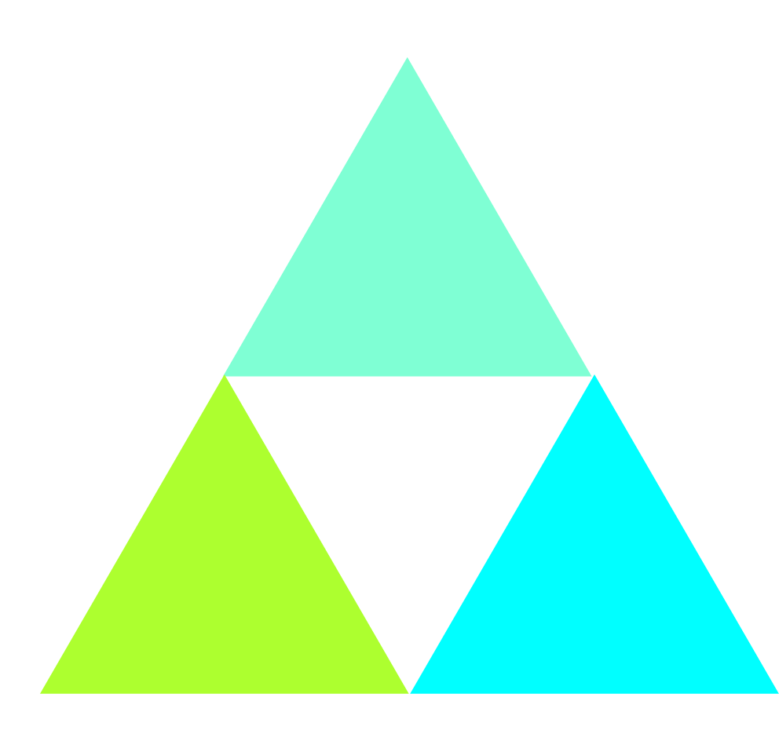

WDI – a conference of tech ideas
when: friday 11 december 2015
where: general assembly, level 12A, 45 william street, melbourne
program
register
Join us for 11 short tech talks at General Assembly!
Speakers / talks
Minecraft Ninja
Ashton Sobell
This was not an encouraging opening for a conversation. Alice replied, rather shyly, 'I—I hardly know, sir, just at present—at least I know who I WAS when I got up this morning.'
Clients
Aviel Goh
Aviel will talk about his experiences and tips on working with clients.
Extreme barista
Ivan Yapeter
Ivan brings his signature crazy style to the technology and philosophy of fine coffee sourcing, brewing, and tasting.
Life Model From Waterfall to Agile
Bono Liu
Spending 50% of your time on planning and design or get progressing every sprint? That's your choice!
Life Model From Waterfall to Agile
Asep Norzai
Spending 50% of your time on planning and design or get progressing every sprint? That's your choice!
The art of procrastination
Helen Habakuk
Ivan brings his signature crazy style to the technology and philosophy of fine coffee sourcing, brewing, and tasting.
Code a 'Jumpy Piranha' game in 10 minutes
Gregory Fernandes
Greg is a newbie himself, and he will demo how to code a game like Flappy Bird, the game that earned the creator around $50,000 per day. The demo will be a few minutes, but enough to get you rolling like a cannon ball.
Hacking for humanity
Keryn Robinson
Keryn will talk about her first experience at a weekend hackathon, working with a team for a social enterprise called Right Click Community.
Ravi blue and other css tricks
Ravi Chada
But when you have to turn into a chrysalis—you will some day, you know—and then after that into a butterfly

Red bean matcha cake
Kylie Sy
Alice; 'but when you have to turn into a chrysalis—you will some day, you know—and then after that into a butterfly, I should think you'll feel it a little queer, won't you?
Red bean matcha cake
Toby Letcher
Well, perhaps you haven't found it so yet,' said Alice; 'but when you have to turn into a chrysalis—you will some day, you know—and then after that into a butterfly, I should think you'll feel it a little queer, won't you?
WDIconf program
Bono Liu
Life Model From Waterfall to Agile
09:30–09:40
Aviel Goh
Clients
09:40–09:50
Greg Fernandes
Code a 'Jumpy Piranha' game in 10
09:50–10:00
Keryn Robinson
Hacking for humanity
10:20–10:30
Helen Habakuk
The art of procrastination
10:30–10:40
Ivan Yapeter
The coffee scientist
10:40–10:50
Ravi Chada
Ravi blue and other CSS tricks
10:50–11:00
Kylie Sy
Having an open mind
11:00–11:10
Toby Letcher
Hacking for humanity
11:10–11:20
Asep Norzai
The art of procrastination
11:20–11:30
Ashton Sobell
Minecraft Ninja
11:40–11:50